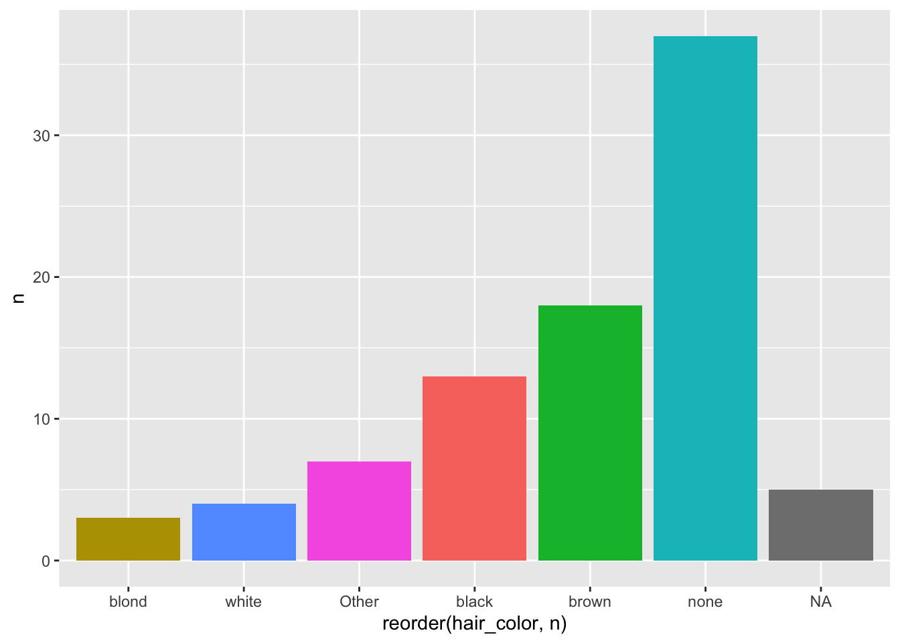
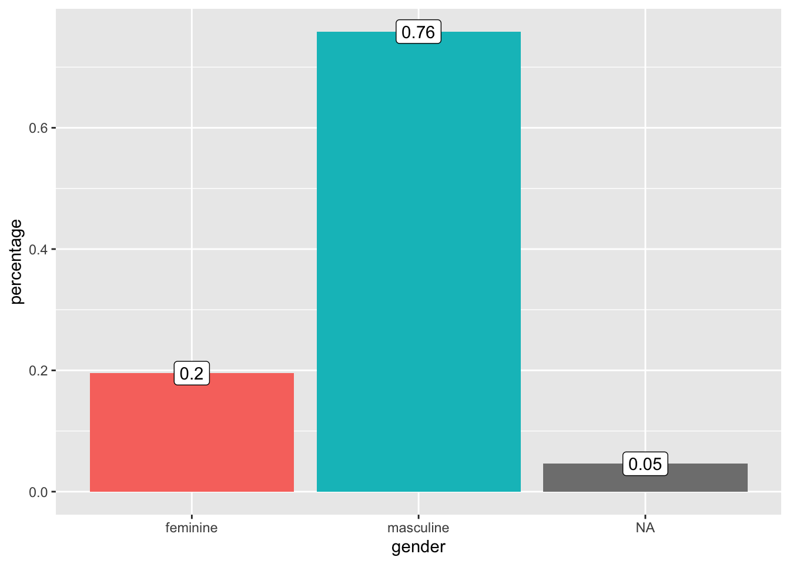
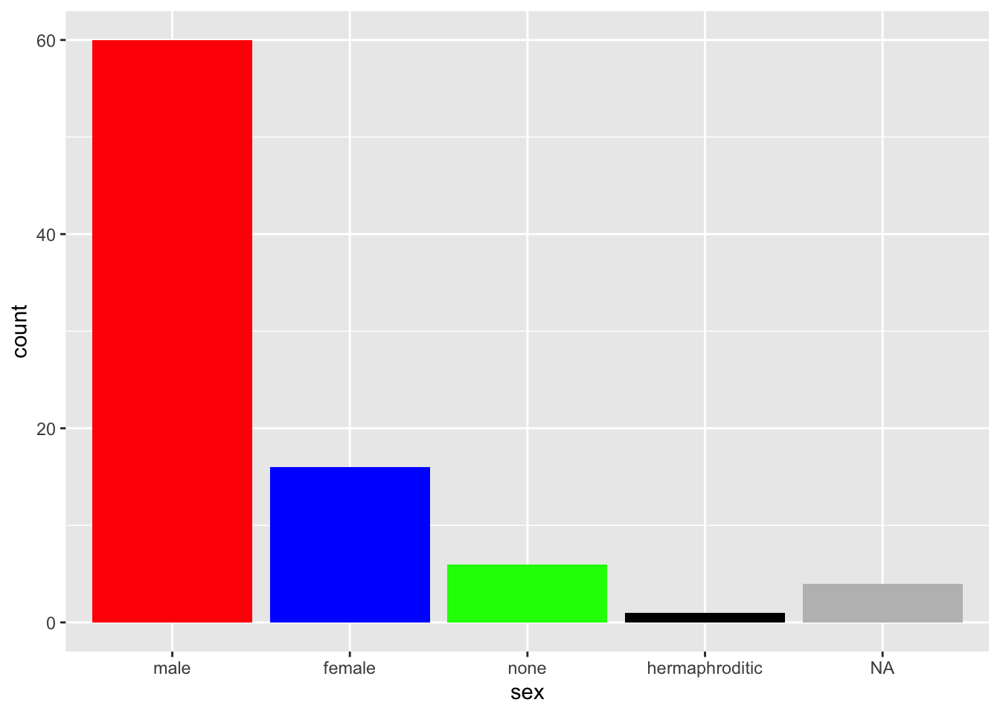
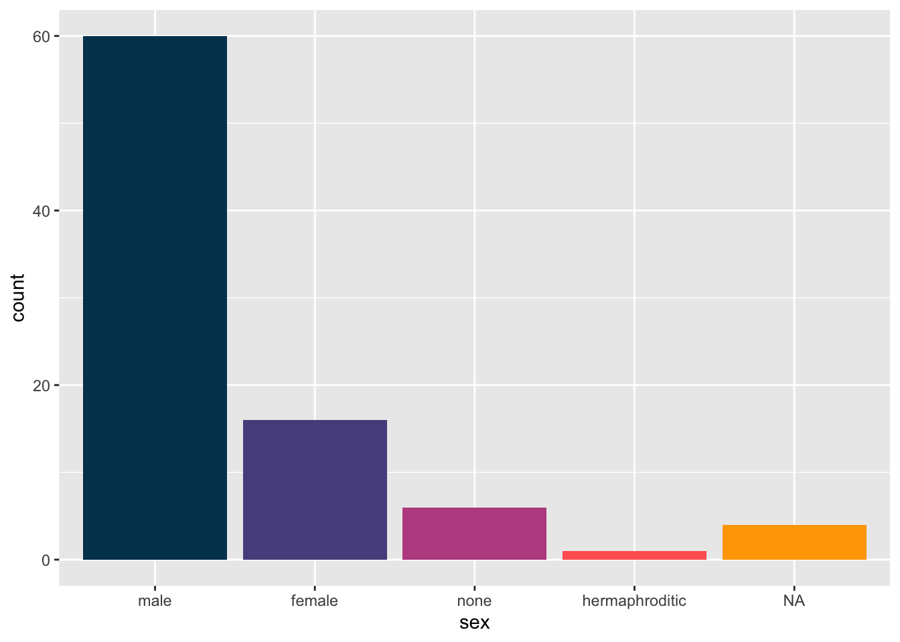
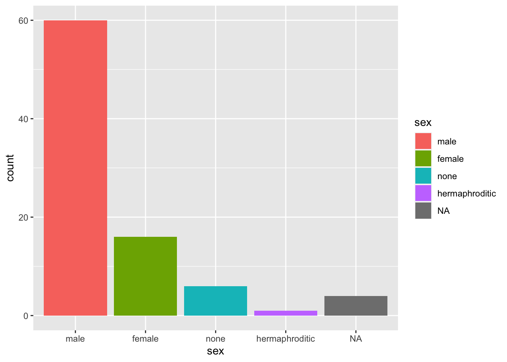
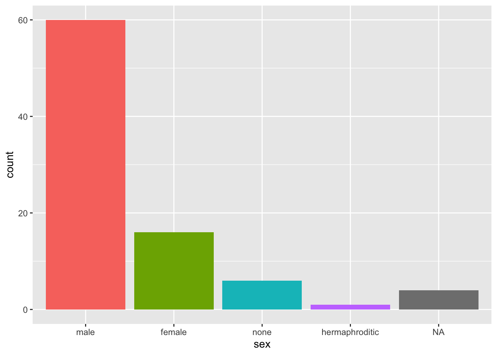

13 Frequent Problems
13.1 First exploration of new dataset
The skim()shows how many missing and unique values each variable has. It uses appropriate measures to describe each variable based on its type: character, numeric or list.
skimr::skim(starwars)| Name | starwars |
| Number of rows | 87 |
| Number of columns | 14 |
| _______________________ | |
| Column type frequency: | |
| character | 8 |
| list | 3 |
| numeric | 3 |
| ________________________ | |
| Group variables | None |
Variable type: character
| skim_variable | n_missing | complete_rate | min | max | empty | n_unique | whitespace |
|---|---|---|---|---|---|---|---|
| name | 0 | 1.00 | 3 | 21 | 0 | 87 | 0 |
| hair_color | 5 | 0.94 | 4 | 13 | 0 | 12 | 0 |
| skin_color | 0 | 1.00 | 3 | 19 | 0 | 31 | 0 |
| eye_color | 0 | 1.00 | 3 | 13 | 0 | 15 | 0 |
| sex | 4 | 0.95 | 4 | 14 | 0 | 4 | 0 |
| gender | 4 | 0.95 | 8 | 9 | 0 | 2 | 0 |
| homeworld | 10 | 0.89 | 4 | 14 | 0 | 48 | 0 |
| species | 4 | 0.95 | 3 | 14 | 0 | 37 | 0 |
Variable type: list
| skim_variable | n_missing | complete_rate | n_unique | min_length | max_length |
|---|---|---|---|---|---|
| films | 0 | 1 | 24 | 1 | 7 |
| vehicles | 0 | 1 | 11 | 0 | 2 |
| starships | 0 | 1 | 17 | 0 | 5 |
Variable type: numeric
| skim_variable | n_missing | complete_rate | mean | sd | p0 | p25 | p50 | p75 | p100 | hist |
|---|---|---|---|---|---|---|---|---|---|---|
| height | 6 | 0.93 | 174.36 | 34.77 | 66 | 167.0 | 180 | 191.0 | 264 | ▁▁▇▅▁ |
| mass | 28 | 0.68 | 97.31 | 169.46 | 15 | 55.6 | 79 | 84.5 | 1358 | ▇▁▁▁▁ |
| birth_year | 44 | 0.49 | 87.57 | 154.69 | 8 | 35.0 | 52 | 72.0 | 896 | ▇▁▁▁▁ |
The glimpse function, on the other hand, gives us a good peak at the first raw values each variable has.
glimpse(starwars)## Rows: 87
## Columns: 14
## $ name <chr> "Luke Skywalker", "C-3PO", "R2-D2", "Darth Vader", "Leia Or…
## $ height <int> 172, 167, 96, 202, 150, 178, 165, 97, 183, 182, 188, 180, 2…
## $ mass <dbl> 77.0, 75.0, 32.0, 136.0, 49.0, 120.0, 75.0, 32.0, 84.0, 77.…
## $ hair_color <chr> "blond", NA, NA, "none", "brown", "brown, grey", "brown", N…
## $ skin_color <chr> "fair", "gold", "white, blue", "white", "light", "light", "…
## $ eye_color <chr> "blue", "yellow", "red", "yellow", "brown", "blue", "blue",…
## $ birth_year <dbl> 19.0, 112.0, 33.0, 41.9, 19.0, 52.0, 47.0, NA, 24.0, 57.0, …
## $ sex <chr> "male", "none", "none", "male", "female", "male", "female",…
## $ gender <chr> "masculine", "masculine", "masculine", "masculine", "femini…
## $ homeworld <chr> "Tatooine", "Tatooine", "Naboo", "Tatooine", "Alderaan", "T…
## $ species <chr> "Human", "Droid", "Droid", "Human", "Human", "Human", "Huma…
## $ films <list> <"The Empire Strikes Back", "Revenge of the Sith", "Return…
## $ vehicles <list> <"Snowspeeder", "Imperial Speeder Bike">, <>, <>, <>, "Imp…
## $ starships <list> <"X-wing", "Imperial shuttle">, <>, <>, "TIE Advanced x1",…13.2 A Count and prop table
First way with forcats::fct_count() Calculates a count and prop table.
starwars$sex %>%
factor() %>%
fct_count(sort = T, prop = T)## # A tibble: 5 × 3
## f n p
## <fct> <int> <dbl>
## 1 male 60 0.690
## 2 female 16 0.184
## 3 none 6 0.0690
## 4 <NA> 4 0.0460
## 5 hermaphroditic 1 0.0115Second way with deplyr::count() Simply mutate a frequency and percentage column on a counted table.
starwars %>%
count(sex) %>%
mutate(freq = n / sum(n)) %>%
mutate(perc = freq * 100)## # A tibble: 5 × 4
## sex n freq perc
## <chr> <int> <dbl> <dbl>
## 1 female 16 0.184 18.4
## 2 hermaphroditic 1 0.0115 1.15
## 3 male 60 0.690 69.0
## 4 none 6 0.0690 6.90
## 5 <NA> 4 0.0460 4.6013.3 Bar graph with count data
Here is a situation where we calculated a count table for hair color - we summarized all values. If we then want to plot a bar graph based on that count table we run into problems, because ggplot2 is expecting a non-summarized or normal data frame.
hair_color_table = starwars %>%
mutate(hair_color = fct_lump_min(hair_color, 2)) %>%
group_by(hair_color) %>%
summarise(n = n())
hair_color_table## # A tibble: 7 × 2
## hair_color n
## <fct> <int>
## 1 black 13
## 2 blond 3
## 3 brown 18
## 4 none 37
## 5 white 4
## 6 Other 7
## 7 <NA> 5To tell the function that we have already summarized data, we add the argument stat = "identity" to the geom_bar() function.
hair_color_table %>%
ggplot(aes(x = reorder(hair_color, n), y = n, fill = hair_color)) +
geom_bar(stat = "identity") +
theme(legend.position = "none")
13.4 Bar graph with percentage labels
First we create a table with counts and percentages:
d = starwars %>%
group_by(gender) %>%
summarise(count = n()) %>%
mutate(percentage = count/sum(count))
d## # A tibble: 3 × 3
## gender count percentage
## <chr> <int> <dbl>
## 1 feminine 17 0.195
## 2 masculine 66 0.759
## 3 <NA> 4 0.0460Then we plot a graph with bar and with percentage labels.
d %>%
ggplot(aes(gender, percentage, label = round(percentage, 2), fill = gender)) +
geom_bar(stat = "identity") +
geom_label(aes(fill = NA), fill = "white") +
theme(legend.position = "none")
13.5 Collapse factors to „Other”
This syntax mutates the categorical variable homeworld into eight of its most frequent values. The other values are being collapsed into the categorical value „other”.
starwars %>%
mutate(homeworld = fct_lump_n(homeworld, n = 8)) %>%
group_by(homeworld) %>%
summarise(mean(height, na.rm =T), mean(mass, na.rm = T), n())## # A tibble: 11 × 4
## homeworld `mean(height, na.rm = T)` `mean(mass, na.rm = T)` `n()`
## <fct> <dbl> <dbl> <int>
## 1 Alderaan 176. 64 3
## 2 Corellia 175 78.5 2
## 3 Coruscant 174. 50 3
## 4 Kamino 208. 83.1 3
## 5 Kashyyyk 231 124 2
## 6 Mirial 168 53.1 2
## 7 Naboo 175. 64.2 11
## 8 Ryloth 179 55 2
## 9 Tatooine 170. 85.4 10
## 10 Other 173. 117. 39
## 11 <NA> 139. 82 1013.6 Filter for specific values
We can easily filter out cases with certain column values, like for example the states of Hawai and Alaska. We use filter(), the operator ! and %in%.
starwars %>%
filter(!homeworld%in%c("Tatooine","Naboo")) %>%
select(name, homeworld)## # A tibble: 66 × 2
## name homeworld
## <chr> <chr>
## 1 Leia Organa Alderaan
## 2 Obi-Wan Kenobi Stewjon
## 3 Wilhuff Tarkin Eriadu
## 4 Chewbacca Kashyyyk
## 5 Han Solo Corellia
## 6 Greedo Rodia
## 7 Jabba Desilijic Tiure Nal Hutta
## 8 Wedge Antilles Corellia
## 9 Jek Tono Porkins Bestine IV
## 10 Yoda <NA>
## # … with 56 more rows13.7 Change bar colors in barplot
You can manually pick the colors with fill and a vector containing the color values. Either in String, written out.
starwars %>%
mutate(sex = fct_infreq(sex)) %>%
ggplot(aes(sex)) +
geom_bar(fill = c("red","blue","green","black","grey")) 
Or with RGB Color Codes.
starwars %>%
mutate(sex = fct_infreq(sex)) %>%
ggplot(aes(sex)) +
geom_bar(fill = c("#003f5c","#58508d","#bc5090","#ff6361","#ffa600")) 
13.8 Hide aes(color) mapping legend
Here is an example where we want the bar colored based on the variable itself, but without the mapping legend.
starwars %>%
mutate(sex = fct_infreq(sex)) %>%
ggplot(aes(sex, fill = sex)) +
geom_bar()
Hide the geom_bar legend.
starwars %>%
mutate(sex = fct_infreq(sex)) %>%
ggplot(aes(sex, fill = sex)) +
geom_bar(show.legend = F)
Remove just the legend title:
starwars %>%
mutate(sex = fct_infreq(sex)) %>%
ggplot(aes(sex, fill = sex)) +
geom_bar() +
theme(legend.title = element_blank())Hide all legends created:
starwars %>%
mutate(sex = fct_infreq(sex)) %>%
ggplot(aes(sex, fill = sex)) +
geom_bar() +
theme(legend.position = "none")
13.9 Re-code values of categorical variables
First way We can use fct_collapse()to create a new column with the new recoded values in it.
Second way By using mutate, to create a new column with our own values and case_when, to run through our observations looking for defined cases, together with “variable” %in%, we can create our own groups.
gapminder %>%
mutate(group = case_when(
region %in% c("Western Europe", "Northern Europe","Southern Europe","Northern America", "Australia and New Zealand") ~ "West", # If region is one of values -> assign it "West" in new group column.
region %in% c("Eastern Asia", "South-Eastern Asia") ~ "East Asia",
region %in% c("Caribbean", "Central America", "South America") ~ "Latin America",
continent == "Africa" &
region != "Northern Africa" ~ "Sub-Saharan",
TRUE ~ "Others")) %>% # If nothing above applies -> assign it "Others" in group column
head(10)## country year infant_mortality life_expectancy fertility
## 1 Albania 1960 115.40 62.87 6.19
## 2 Algeria 1960 148.20 47.50 7.65
## 3 Angola 1960 208.00 35.98 7.32
## 4 Antigua and Barbuda 1960 NA 62.97 4.43
## 5 Argentina 1960 59.87 65.39 3.11
## 6 Armenia 1960 NA 66.86 4.55
## 7 Aruba 1960 NA 65.66 4.82
## 8 Australia 1960 20.30 70.87 3.45
## 9 Austria 1960 37.30 68.75 2.70
## 10 Azerbaijan 1960 NA 61.33 5.57
## population gdp continent region group
## 1 1636054 NA Europe Southern Europe West
## 2 11124892 13828152297 Africa Northern Africa Others
## 3 5270844 NA Africa Middle Africa Sub-Saharan
## 4 54681 NA Americas Caribbean Latin America
## 5 20619075 108322326649 Americas South America Latin America
## 6 1867396 NA Asia Western Asia Others
## 7 54208 NA Americas Caribbean Latin America
## 8 10292328 96677859364 Oceania Australia and New Zealand West
## 9 7065525 52392699681 Europe Western Europe West
## 10 3897889 NA Asia Western Asia OthersWe turn this group variable into a factor to control the order of the levels:
13.10 Order color legend
Order color legend by a variable’s values.
13.11 Show unique values
Display all unique values of variable.
distinct(starwars, species) # dplyr function## # A tibble: 38 × 1
## species
## <chr>
## 1 Human
## 2 Droid
## 3 Wookiee
## 4 Rodian
## 5 Hutt
## 6 Yoda's species
## 7 Trandoshan
## 8 Mon Calamari
## 9 Ewok
## 10 Sullustan
## # … with 28 more rowsNote: distinct(dat$countries) doesn’t work.
13.12 Slice rows by maximum or minimum values
Note: parameter n must be explicitly written, otherwise it throws an error.
starwars %>%
slice_max(height, n = 5)## # A tibble: 5 × 14
## name height mass hair_color skin_color eye_color birth_year sex gender
## <chr> <int> <dbl> <chr> <chr> <chr> <dbl> <chr> <chr>
## 1 Yarael … 264 NA none white yellow NA male mascul…
## 2 Tarfful 234 136 brown brown blue NA male mascul…
## 3 Lama Su 229 88 none grey black NA male mascul…
## 4 Chewbac… 228 112 brown unknown blue 200 male mascul…
## 5 Roos Ta… 224 82 none grey orange NA male mascul…
## # … with 5 more variables: homeworld <chr>, species <chr>, films <list>,
## # vehicles <list>, starships <list>Show me 5% of the lowest height rows.
starwars %>%
slice_min(height, prop = 0.05)## # A tibble: 4 × 14
## name height mass hair_color skin_color eye_color birth_year sex gender
## <chr> <int> <dbl> <chr> <chr> <chr> <dbl> <chr> <chr>
## 1 Yoda 66 17 white green brown 896 male mascu…
## 2 Ratts Ty… 79 15 none grey, blue unknown NA male mascu…
## 3 Wicket S… 88 20 brown brown brown 8 male mascu…
## 4 Dud Bolt 94 45 none blue, grey yellow NA male mascu…
## # … with 5 more variables: homeworld <chr>, species <chr>, films <list>,
## # vehicles <list>, starships <list>13.13 Show Number of NAs
For a quick check of how many missing values there are in a single column:
sum(is.na(starwars$height))## [1] 6And how many are not NAs.
sum(!is.na(starwars$height))## [1] 81For a more detailed overview of the whole dataset use skim(). It shows a very useful complete_rate which tells us how much of the column is disturbed by missing values.
skimr::skim(starwars)| Name | starwars |
| Number of rows | 87 |
| Number of columns | 14 |
| _______________________ | |
| Column type frequency: | |
| character | 8 |
| list | 3 |
| numeric | 3 |
| ________________________ | |
| Group variables | None |
Variable type: character
| skim_variable | n_missing | complete_rate | min | max | empty | n_unique | whitespace |
|---|---|---|---|---|---|---|---|
| name | 0 | 1.00 | 3 | 21 | 0 | 87 | 0 |
| hair_color | 5 | 0.94 | 4 | 13 | 0 | 12 | 0 |
| skin_color | 0 | 1.00 | 3 | 19 | 0 | 31 | 0 |
| eye_color | 0 | 1.00 | 3 | 13 | 0 | 15 | 0 |
| sex | 4 | 0.95 | 4 | 14 | 0 | 4 | 0 |
| gender | 4 | 0.95 | 8 | 9 | 0 | 2 | 0 |
| homeworld | 10 | 0.89 | 4 | 14 | 0 | 48 | 0 |
| species | 4 | 0.95 | 3 | 14 | 0 | 37 | 0 |
Variable type: list
| skim_variable | n_missing | complete_rate | n_unique | min_length | max_length |
|---|---|---|---|---|---|
| films | 0 | 1 | 24 | 1 | 7 |
| vehicles | 0 | 1 | 11 | 0 | 2 |
| starships | 0 | 1 | 17 | 0 | 5 |
Variable type: numeric
| skim_variable | n_missing | complete_rate | mean | sd | p0 | p25 | p50 | p75 | p100 | hist |
|---|---|---|---|---|---|---|---|---|---|---|
| height | 6 | 0.93 | 174.36 | 34.77 | 66 | 167.0 | 180 | 191.0 | 264 | ▁▁▇▅▁ |
| mass | 28 | 0.68 | 97.31 | 169.46 | 15 | 55.6 | 79 | 84.5 | 1358 | ▇▁▁▁▁ |
| birth_year | 44 | 0.49 | 87.57 | 154.69 | 8 | 35.0 | 52 | 72.0 | 896 | ▇▁▁▁▁ |
13.14 Drop rows with missing values
Drop rows that have NAvalues in a specific column, here in height.
starwars %>%
drop_na(height)## # A tibble: 81 × 14
## name height mass hair_color skin_color eye_color birth_year sex gender
## <chr> <int> <dbl> <chr> <chr> <chr> <dbl> <chr> <chr>
## 1 Luke S… 172 77 blond fair blue 19 male mascu…
## 2 C-3PO 167 75 <NA> gold yellow 112 none mascu…
## 3 R2-D2 96 32 <NA> white, bl… red 33 none mascu…
## 4 Darth … 202 136 none white yellow 41.9 male mascu…
## 5 Leia O… 150 49 brown light brown 19 fema… femin…
## 6 Owen L… 178 120 brown, grey light blue 52 male mascu…
## 7 Beru W… 165 75 brown light blue 47 fema… femin…
## 8 R5-D4 97 32 <NA> white, red red NA none mascu…
## 9 Biggs … 183 84 black light brown 24 male mascu…
## 10 Obi-Wa… 182 77 auburn, wh… fair blue-gray 57 male mascu…
## # … with 71 more rows, and 5 more variables: homeworld <chr>, species <chr>,
## # films <list>, vehicles <list>, starships <list>Drop all rows that contain NA in any column.
starwars %>%
drop_na()## # A tibble: 6 × 14
## name height mass hair_color skin_color eye_color birth_year sex gender
## <chr> <int> <dbl> <chr> <chr> <chr> <dbl> <chr> <chr>
## 1 Luke Sk… 172 77 blond fair blue 19 male mascu…
## 2 Obi-Wan… 182 77 auburn, wh… fair blue-gray 57 male mascu…
## 3 Anakin … 188 84 blond fair blue 41.9 male mascu…
## 4 Chewbac… 228 112 brown unknown blue 200 male mascu…
## 5 Wedge A… 170 77 brown fair hazel 21 male mascu…
## 6 Darth M… 175 80 none red yellow 54 male mascu…
## # … with 5 more variables: homeworld <chr>, species <chr>, films <list>,
## # vehicles <list>, starships <list>Filter out any NA containing rows.
starwars %>%
na.exclude()## # A tibble: 29 × 14
## name height mass hair_color skin_color eye_color birth_year sex gender
## <chr> <int> <dbl> <chr> <chr> <chr> <dbl> <chr> <chr>
## 1 Luke S… 172 77 blond fair blue 19 male mascu…
## 2 Darth … 202 136 none white yellow 41.9 male mascu…
## 3 Leia O… 150 49 brown light brown 19 fema… femin…
## 4 Owen L… 178 120 brown, grey light blue 52 male mascu…
## 5 Beru W… 165 75 brown light blue 47 fema… femin…
## 6 Biggs … 183 84 black light brown 24 male mascu…
## 7 Obi-Wa… 182 77 auburn, wh… fair blue-gray 57 male mascu…
## 8 Anakin… 188 84 blond fair blue 41.9 male mascu…
## 9 Chewba… 228 112 brown unknown blue 200 male mascu…
## 10 Han So… 180 80 brown fair brown 29 male mascu…
## # … with 19 more rows, and 5 more variables: homeworld <chr>, species <chr>,
## # films <list>, vehicles <list>, starships <list>13.15 Replace NAs
Replace 0 with value you want as a replacement.
data(na_example)
sum(is.na(na_example))## [1] 145no_nas <- ifelse(is.na(na_example), 0, na_example) # "if is NA is true, change value to 0, else keep the value (i.e. na_example)"
sum(is.na(no_nas))## [1] 013.16 The factor variable trap
The FVT is about what happens when you try to return factorized vectors into numeric values. Let’s look at this with this code.
z <-factor(c("12", "13", "14", "15", "12")) # We create an object by directly factorizing a vector.
z## [1] 12 13 14 15 12
## Levels: 12 13 14 15y <- as.numeric(z) # Now we want to convert them into numeric values.
y # What?## [1] 1 2 3 4 1This happened, because we picked up the on the factorization result. factor() assigns every element, based on its value, an integer number.
typeof(z) # 1=12, 13=2, 14=3, 15=4, 12=1## [1] "integer"To fix this problem, first convert the object back to character and then to numeric.
y <- as.numeric(as.character(z))
y## [1] 12 13 14 15 12